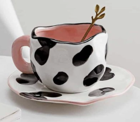
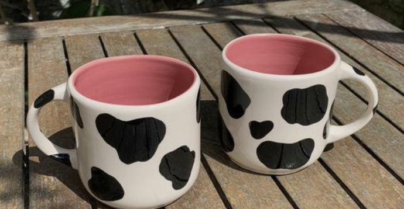
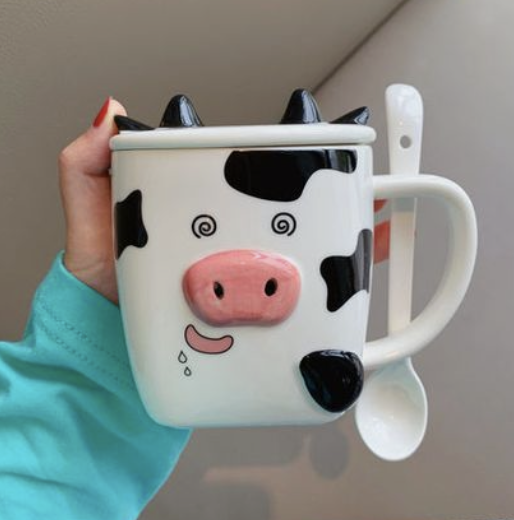

Oreo's
Are you tired of not being able to dunk more than one delicious oreo into milk? Well fear no more because Oreo presents Oreo Mugs.
Oreo is presenting a special cow themed collection!
The Fancy Cow Mug
Oreo presents The Fancy Cow Mug, for when your feeling fancy and want your simple oreo snack. It comes with a cow printed mug, cow printed plate, and a small golden stirring spoon.
$19.99
Two Moo's
If your looking for something more simple and a also a mug set. We introduce Two Moo's, this is simple classic mug for you to dunk multiple Oreos in.
$24.99
Delux Moo Mug
Incase you're looking for an even bigger cup we also have the Delux Moo Mug. The Delux Moo Mug was created by Oreo for an even better dunking experience. It comes with a ceramic lid and a handle with a ceramic spoon.
$29.99